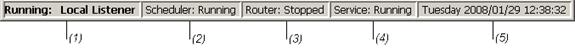

The status bar has five sections:

- Lists any running action, host actions, and
local hosts.
- Indicates whether the Cleo Harmony
scheduler is currently running.
- VLTrader and Harmony only. Indicates whether the Cleo Harmonyrouter
is currently running.
- Shows the mode of the Cleo Harmony
UI:
- Service/Daemon: Running - The Cleo Harmony
UI is a 2nd process attached to a Cleo Harmony
Windows service or Unix daemon, which is running in the background. If the Cleo Harmony
service/daemon should stop, the Cleo Harmony
UI will indicate Service/Daemon: Stopped and then shutdown.
- UI Service/Daemon - Cleo Harmony
is not running in the background as a Windows service or Unix daemon, but the Cleo Harmony
UI is enabled as a “service” (see Other System Options).
This means that the Cleo Harmony
UI will act as a Cleo Harmony
service/daemon would and service any Cleo Harmony
command line processes.
- Standalone - Cleo Harmony
is not running in the background as a Windows service or Unix daemon, and the Cleo Harmony
UI is not enabled as a “service” (see Other System Options).
This means that Cleo Harmony
command line processes will queue up and only run after the Cleo Harmony
UI is exited.
- Service/Daemon - Cleo Harmony
is running in the background as a Windows service or Unix daemon, but because the Cleo Harmony
service/daemon is enabled as a UI (see Other System Options),
there is not a 2nd
Cleo Harmony
UI process attached (i.e. the Cleo Harmony
service/daemon process itself is displaying the UI).
Note: When Cleo Harmony
is running on an AS/400, by default it is running in the background like a Windows service
or Unix daemon. The Cleo Harmony UI can be displayed on a Windows PC connected to the AS/400, and in
this case the Cleo Harmony
UI mode will be AS/400: Running.
- Continually reflects the current day, date, and time.